Toyota Mobility Foundation Capstone · Indiana University MS HCI · Spring 2026
Designing for Real Operations: A Volunteer Management System for the IMPACT Center Food Pantry
A real-time coordination system that replaced one Operations Manager's memory with a shared digital task board, deployed live to 189 volunteers at a food pantry serving 400+ families a month.
My role — UX researcher and designer on a three-person team. I facilitated participant sessions in the usability workshop, contributed to the IA and Figma design system, and worked in Claude Code to help ship the interface to production.
400+families served monthly
189volunteers, one live session
100%task completion in testing
$0/moongoing cost to the pantry
The problem
One person held every piece of the operation
Every distribution session, volunteers showed up with no advance notice, working through donations nobody could plan for until the boxes were opened. All of that knowledge lived in one Operations Manager's head.
2–30 volunteers, no advance noticeDonation contents unknown until opened1 person coordinating everything
Field research
Getting it from real people, not assumptions
Partway in, we discovered a prior semester's research had been fabricated and restarted from scratch: stakeholder interviews, field observation, a live dot-survey experiment, and a review of 20+ sources on pantry operations.
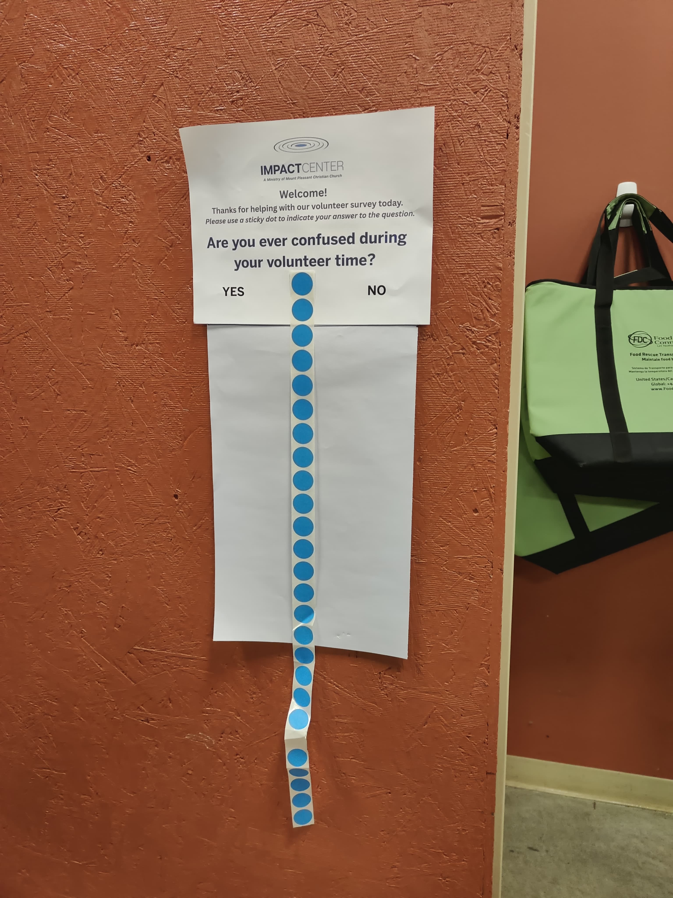
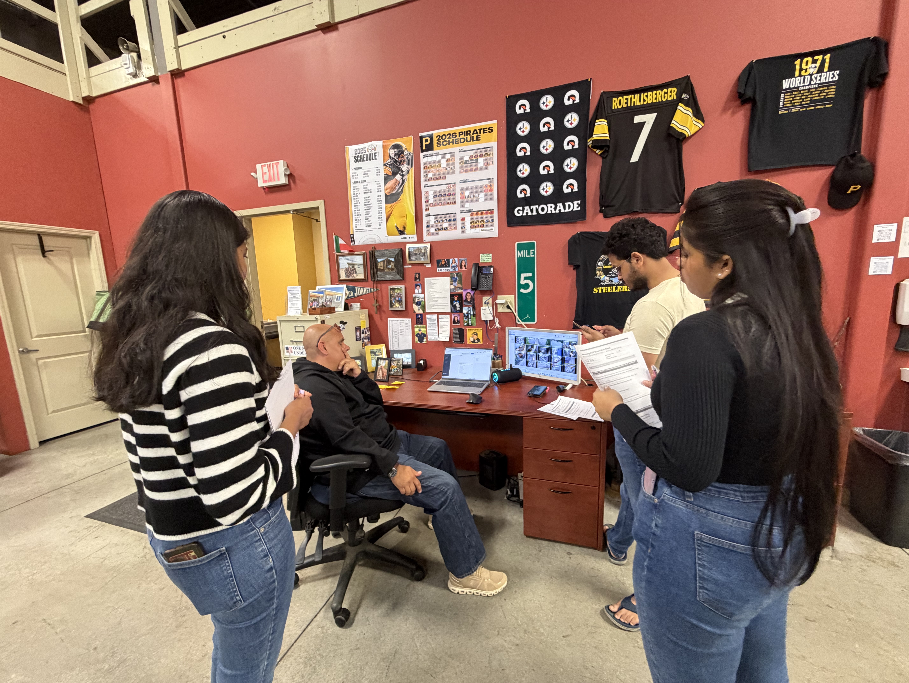
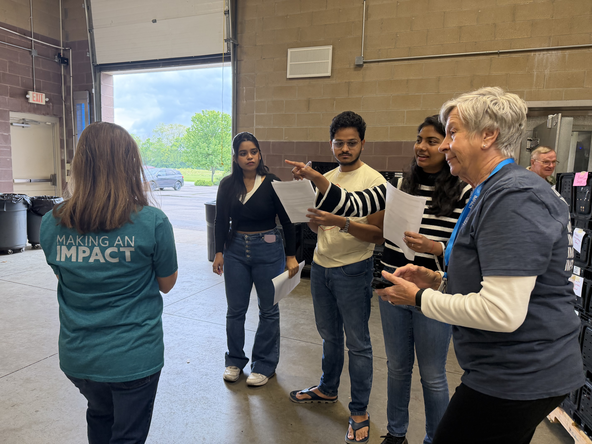
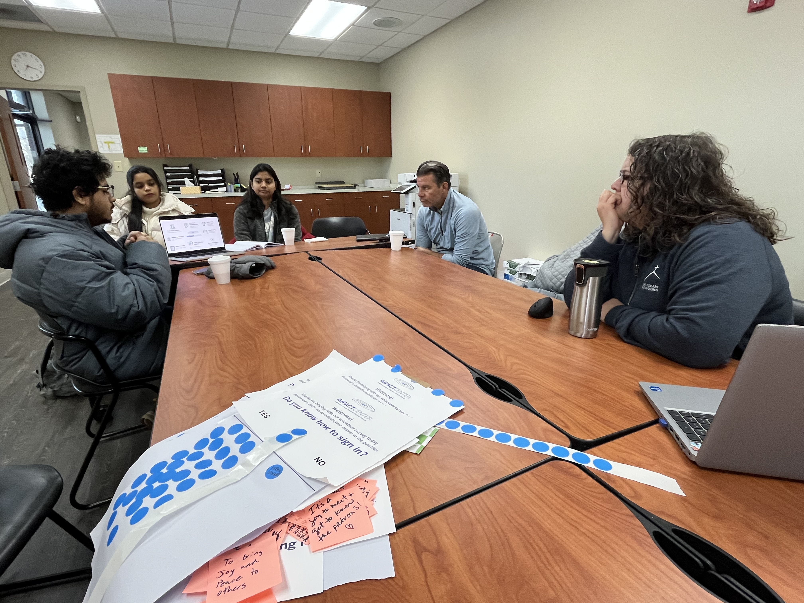
What we found
Four structural problems, not one bad system
All knowledge lived in one person's head, so every question routed through him.
Unpredictable headcount broke any task list made the night before.
No one could see what was already claimed, so tasks got duplicated or abandoned.
New volunteers had no way to get oriented without direct instruction.
A nearby pantry's existing software showed −4,671 items in inventory — proof that data entry as a separate step from the physical work eventually falls out of sync with reality. That became a hard design constraint.
The decision
Coordination over inventory
Two directions were on the table: live inventory tracking, or volunteer coordination. The Operations Manager's most acute problem was coordination, so that's what we built — accessed by QR code and volunteers' own phones instead of $1,000–$2,000 in dedicated tablets.
Designing for the room
Not just the screen
Volunteers ranged from 60 to 80 years old with wide variation in tech comfort: 60×60px touch targets, one action per screen, no more than two taps to anything.
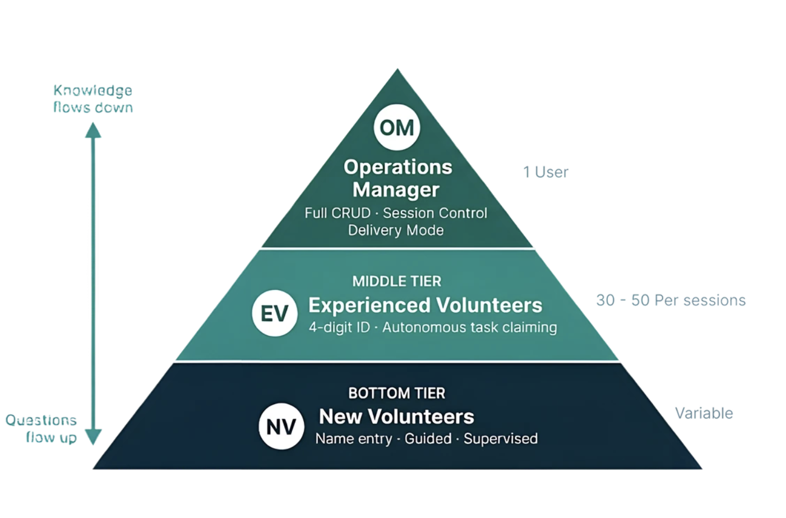
Knowledge used to flow down through one person and questions flowed back up through him. The three-tier model gives each role exactly the access it needs.
"I typed my phone number in Google and the first four things were my family. That's terrifying."
Operations Manager · March 25, 2026
That's why experienced volunteers log in with the last four digits of their phone number instead of the full thing.
The design in motion
The four-state task system
We started with three states. The workshop surfaced a fourth: tasks abandoned mid-way, which the old paper system had no way to flag.
Available In Progress Incomplete Complete
Click a card to move it through the states. Incomplete tasks roll over to the next session automatically.
Testing it three ways
Three methods, three different blind spots covered
1
March 26 · Cognitive Walkthrough
Step-by-step, before real users touched it
Flagged a tag filter bar volunteers kept tapping by mistake, expecting it to take them somewhere rather than filter the list.
2
March 23 · Think-Aloud Workshop
10 volunteers, individual sessions first
All three sessions independently flagged that same filter. 100% task completion, zero critical errors.
3
April 15 · Live, Unmonitored Session
No researchers on site. No paper backup.
189 volunteers, a full Wednesday session, and no paper backup — the Operations Manager's own call, because he trusted it. It held up.
"A volunteer does half a job, and 30 others see it crossed out and skip it. The whole rack ends up empty."
Operations Manager Observer · Workshop conclusion meeting
Beyond the screen
The building changed too
Within 48 hours of the workshop, the Operations Manager's team had already labeled the warehouse bays and updated the paper board — on their own, before we discussed the findings.
Where it landed
Live, in production, handed off
64+ screens across three roles, built on React, Firebase, and Tailwind, deployed on Vercel. Zero ongoing cost. Fully handed off to the church's IT contact.
The prototype
A few screens from the live system
Same design system across two modules — Pantry and Delivery — and every role from Operations Manager down to a first-time volunteer.
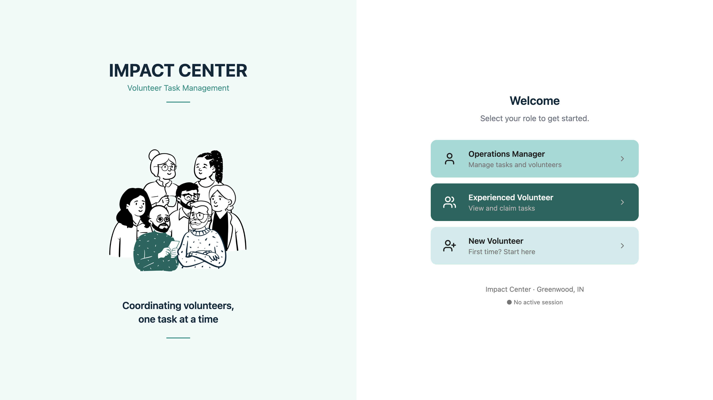
Landing page. Same URL for every user — role determines the experience from here.
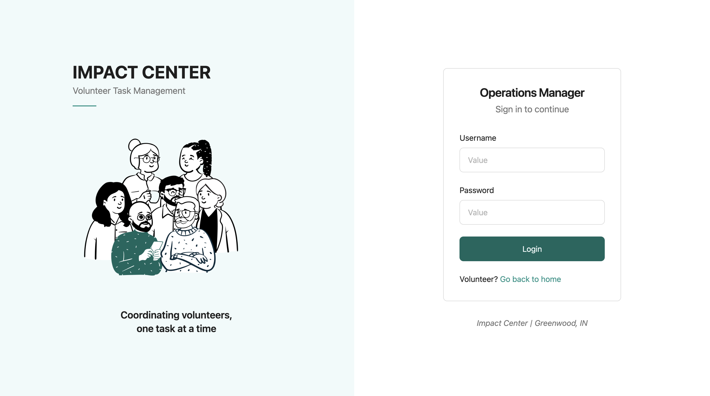
Operations Manager login. Username and password, the only role that needs one.
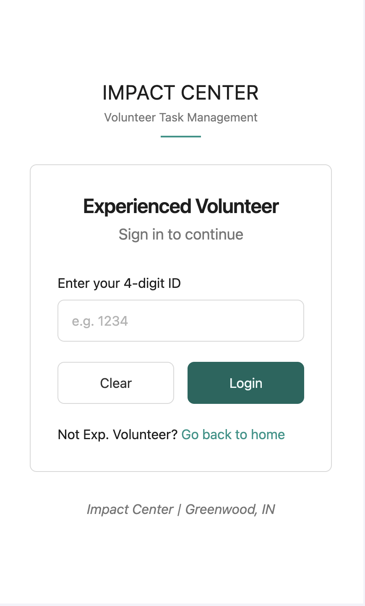
Volunteer login, on a phone. The 4-digit ID in practice — last four digits of a phone number, nothing more.
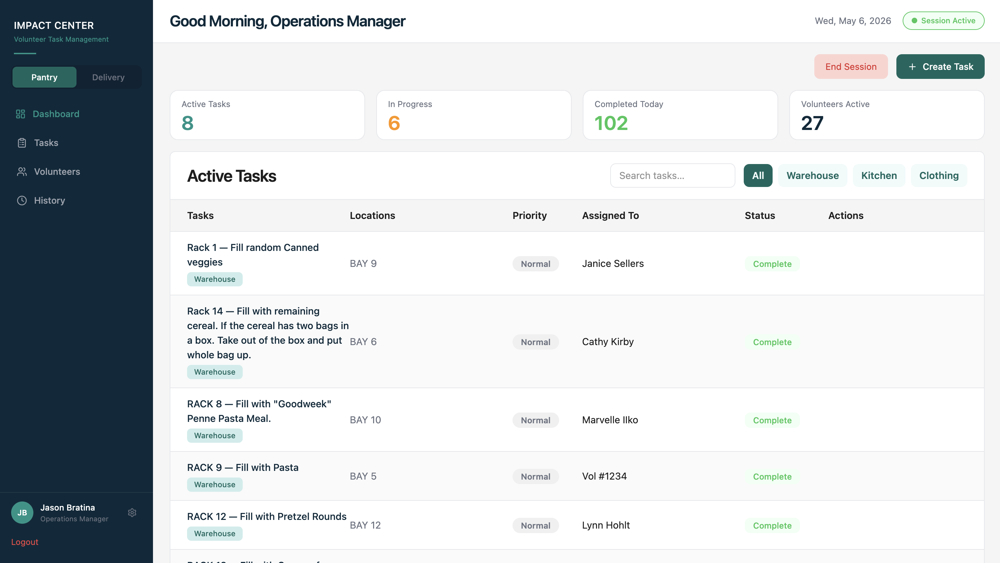
Pantry dashboard. Active, in-progress, and completed tasks at a glance, with live volunteer count.
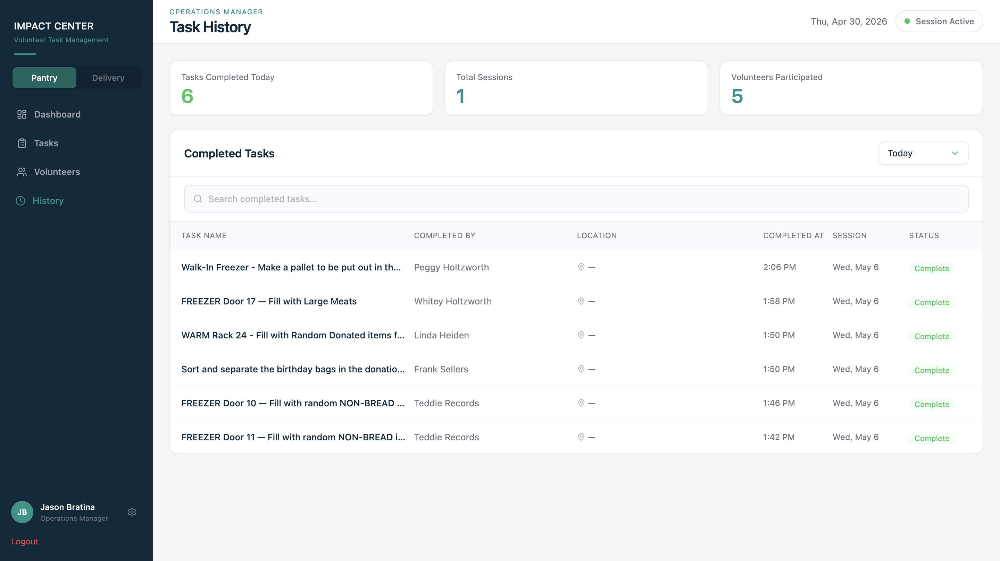
Task history. Every completed task logged with volunteer attribution and a timestamp.
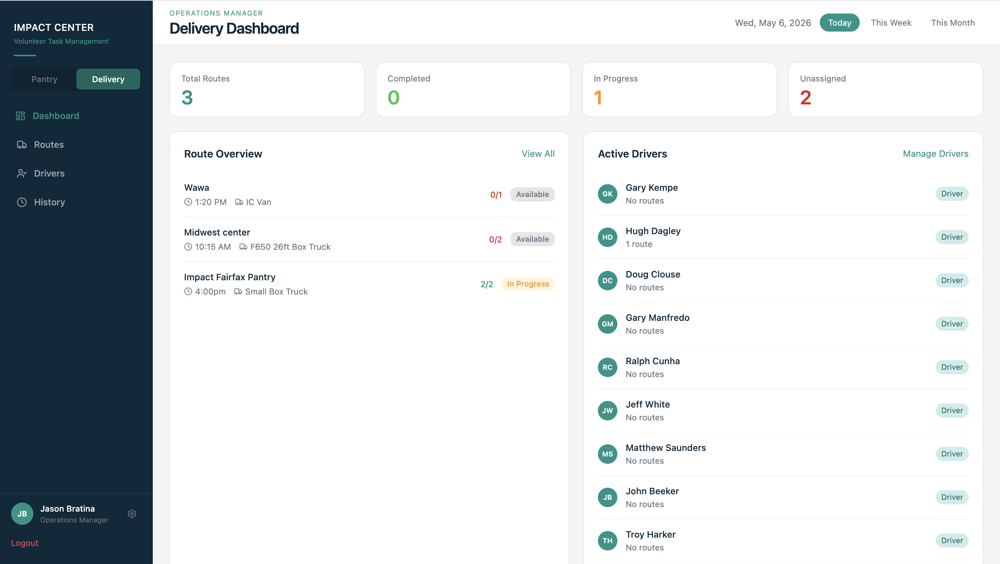
Delivery dashboard. The same claim/complete framework, reused at the route level for driver coordination.
What I'd still want to test
Honest limitations
No baseline was measured before deployment, so the 60% interruption-reduction target is still a hypothesis. Inventory tracking is still unbuilt. And it's one pantry — the structural problems generalize, but the interface decisions were shaped by this specific building and community.
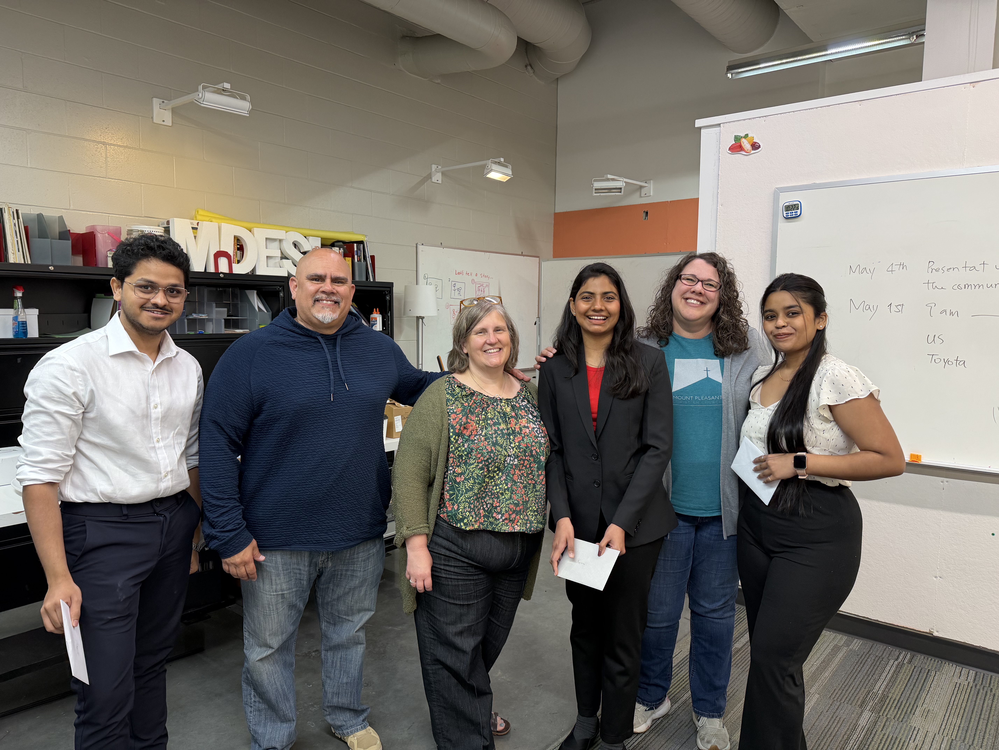
From zero to one, all the way through
"From zero to one product. From research to handing off the product. This is a big thing for us." — Tanishq Sardar, March 25, 2026